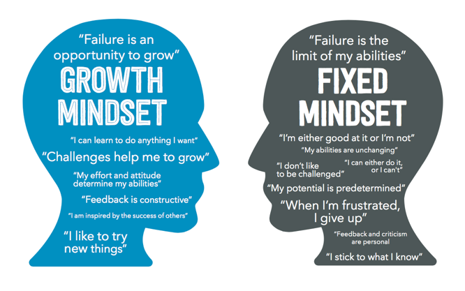

Neuroplasticity and Growth Mindset
NEUROPLASTICITY
How does understanding the principals of neuroplasticity benefits people?
I learned that engaging in new activites helps stimulate and grow the brain as well as repeating activites helps harden those
activites into your psyche which makes those activites much easier to perform in the future.
How you might engage with the principals of neuroplasticity for your own benefit?
Through things such as drumming or doing weight lifting/muscle building, this is a concept that I have known to exist
just to do the fact of actually seeing the results, although not putting a scientific name or doing any research into.
After learning this I will look to use this concept to keep my brain active in the activites I do as well as to push
or break through walls/barriers that are holding my growth or development back with computer coding/drumming or anything
I look to do going forward.
What are some of the ways to increase your neuroplasticity
To try different activites that are related into what you are doing to help you develop more effectively as well as
repeatition on these activites to help engrave them into your psyche to perform more easily. Learning new activites,
developing on weaknesses and to continue to learn or challenge your mind through all the years of your life help to
increase your neuroplasicity.
RESEARCH GROWTH MINDSET

What it is and why it is relevant
With engaging new activites to grow, looking to attack or attempt challenging or difficult activites with a positive attitude
helps you to do better when engaging them as well as actually helps to stimulate and grow your brain as well. It is relevant
because it can help you from not achieveing goals or learning topics/subjects to actually being able to do so, all with
the right positive mindset.
In this exploration, did anything surprise you? Change for you?
This is something I have been familar with, although similar to neuroplasticity I will be intergrating into my mindset more
prominently when I look to learn something new and challening to get the most out of it in the shortest amount of time.
How will you integrate growth mindset into your learning journey?
I will look to take on any challenges or 'hard tasks' on with a positive mindset as well as not worry to compare my
shortcomings if any to anyone else around me. Deep breaths, deep focus and the will to achieve will help me persevere
through anything I encounter going forward.